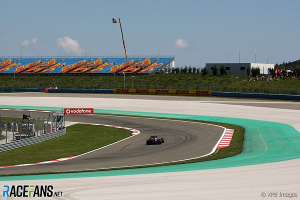
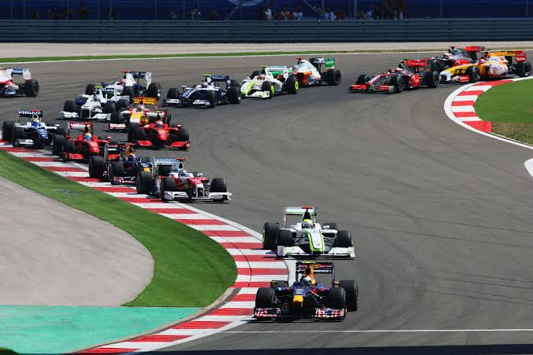
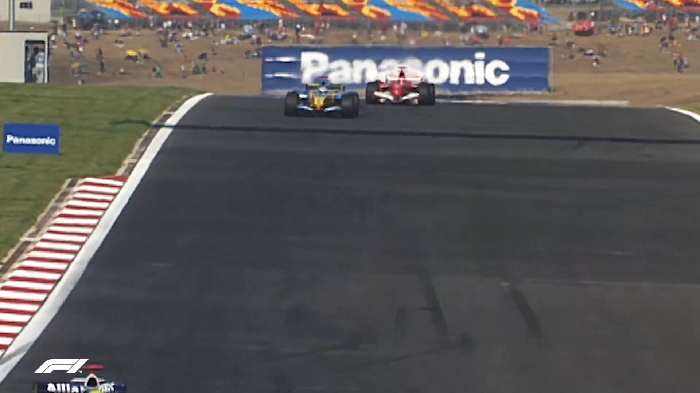
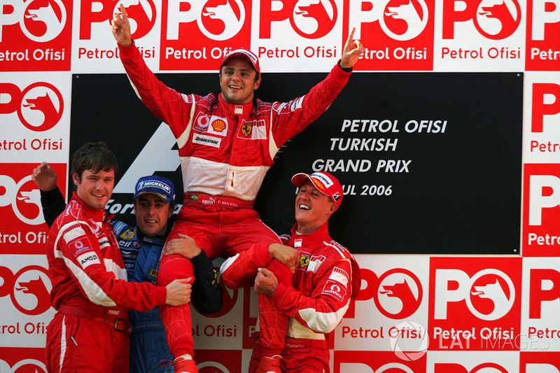
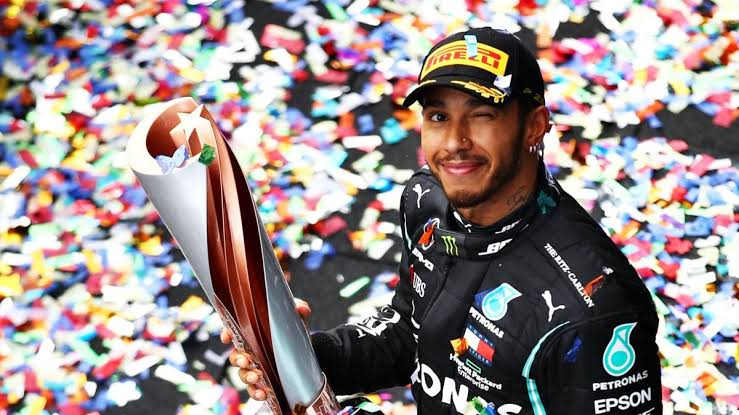
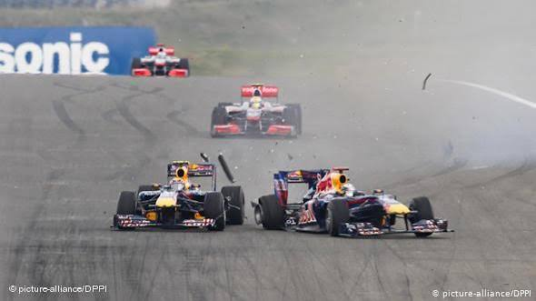

Diabolica: 8. Viraj
Dört apeksli, uzun ve çok hızlı bir viraj. Pilotlar yaklaşık 6-7 saniye boyunca 5G civarında yüke maruz kalıyor. Sağ ön lastik ve boyun kasları en çok burada yoruluyor.
Doğal iniş çıkışları, saat yönünün tersine akışı ve 8. virajıyla takvimdeki en özel pistlerden biri.
Pisti keşfetHERMANN TILKE
İstanbul Park'ı bu kadar zorlu yapan üç nokta.

Dört apeksli, uzun ve çok hızlı bir viraj. Pilotlar yaklaşık 6-7 saniye boyunca 5G civarında yüke maruz kalıyor. Sağ ön lastik ve boyun kasları en çok burada yoruluyor.

Start düzlüğünden sonra pilotlar tepeyi aşıp çıkışı göremeden yüksek hızla aşağı dalıyor. Bathurst'teki Mount Panorama'yı andıran bu bölüm start anında temasların en çok yaşandığı yer.

10. virajdan sonra araçlar hızlanıyor, 11. viraj ise tepe yukarı körlemesine tam gazla dönülüyor. Ardından gelen uzun düzlükte DRS ile 12. viraj şikanına sert frenle girilirken pistin en iyi geçiş hamleleri yapılıyor.
UNUTULMAZ ANLAR
Pilotlar ve yarışlar.

İstanbul Park denince akla gelen ilk isim. Ferrari ile 2006, 2007 ve 2008'de üst üste üç kez pole alıp yarışı kazandı. İlk F1 galibiyetini de burada aldı.

2020'de yağmurlu ve kaygan pistte 6. sıradan başlayıp yarışı kazandı. Bu galibiyetle 7. dünya şampiyonluğunu İstanbul'da kutlayıp Schumacher'in rekoruna ulaştı.

Şampiyonluk için yarışan iki Red Bull pilotu 40. turda arka düzlükte birbirine girdi. Vettel'in parmağını kafasına götürdüğü an takım içi krizlerin en ünlülerinden biri oldu.
Takvim Las Vegas, Suudi Arabistan gibi düz ve bariyerlerle çevrili cadde pistleriyle dolu iken TOSFED İstanbul Park bambaşka bir yerde duruyor.
2005'te yapılmasına rağmen doğal kot farkları sayesinde Spa ve Suzuka gibi klasik pistlerin havasını taşıyor. 2027'den 2031'e kadar süren anlaşma hem Türkiye'nin motor sporlarındaki yerini güçlendiriyor hem de bu pisti takvime geri getiriyor.
5.338 m
14
Saat yönünün tersi
1:24.770 (Montoya)